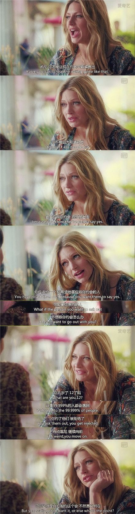

如何爱自己
转载自知乎。
请像爱一个你爱的人一样去爱。
你是如何爱一个人的？
你喜欢关于ta的一切吗？ta的颜，ta的语，ta的一颦一笑？ta的努力，ta的童心，ta的生活轨迹？
你会关心ta吗？你会对ta嘘寒问暖吗？ta生病了，你会不会照顾ta？
你会帮助ta吗？ta取得了成就，你会为ta开心，为ta喝彩，为ta感到骄傲自豪吗？ta受到挫折，你会安慰ta，支持ta，鼓励ta吗？
**我会呢！因为我爱他。**因为我爱他，所以我希望成为一个最好的伴侣。我向着成为“贤内助”的方向努力。
我是一个十分感性的姑娘，但是在恋爱中，我会注意让自己理性地思考问题。我在各个方面考虑他的感受，我在各种细节思考他的需求。
我关心他，关注他，引导他，帮助他，跟他撒娇，给他纠正错误，天冷给他织围巾，提醒他带外套；他累了给他按摩，他困了给他铺床；室内空调温度低，倒热水给他喝，还要确保不烫嘴。
我学做菜，因为他爱吃；我炖鸡汤给他喝，因为喜欢看他眼睛里闪着光的欢喜笑脸。
我要求自己成为他的贤内助，辅助他取得事业上的成功。我督促他健身和早起，并且以身作则。我在外人面前，以朋友的身份，真诚地夸赞他的优点，使他更受欢迎。
有时我会在最亲近的朋友间，当面指出他的错误， 调侃他懒惰的小毛病。更多的时候，我会提醒自己，把一些话留着私底下告诉他，避免他难堪。
他取得了成就，我发自内心地赞美他；他受到了挫折，我心疼，温柔地安慰他，然后理性地分析事态，与他探讨解决方案。
我不宠溺他。他的不好的习惯，会在我的引导下慢慢改掉或者改善。
我爱他，我就对他好。然而我不曾意识到，我对自己并不好。
**我不注重自己的健康，不关注身体的需求。**一个人的时候，不注重规律饮食，很容易就不吃饭、不按时吃饭、叫外卖、吃零食、吃泡面，怎么糊弄怎么来。渴了不去喝水，饿了不去吃东西。
**我对自己要求很严。**我对别人宽容，对自己却总像是拿着个鞭子，鞭策自己在各个方面都要努力，都要优秀。我绷紧了神经，努力向前冲刺，给自己的小身躯上压上了蜗壳，重重的。
我不体恤自己劳累，我不体谅自己的身体。我生病了吃药只为不让病躯拖慢自己。我受挫了先责备自己。不敢畅快地哭，受伤了也舍不得给自己的心几句温柔的安慰。
**我吝惜对自己的褒奖、欣赏。**取得了成就，我很少打从心底地夸赞自己。不欣赏自己，担心自己的外表不够吸引人。
**我不关注我内心的需求。**我总是朝着“我应该”的方向去做选择，很少考虑“我想要”的那些选项。
而今我想想，如果是他，我怎会舍得让他这么糊弄自己的身子呢。我关心他的身体健康，我爱他，所以我会督促他规律饮食，我会愿意为他做饭，让他注意营养均衡。如果是他，我怎会不支持他，鼓励他，为他欢喜为他愁？
**从前的我，还没有想过爱自己。**是的，我还没有想过爱自己。我还没有好好思考过这个问题。我从未意识到这是个问题。
我爱他，我爱至亲，我爱护花花草草小猫小狗。
我却没想过要爱自己。这是多么可笑啊！
多幸运才能在这世上走一遭，为何不该趁此机会好好地爱自己吗？有许许多多的人，在我的生命里出现。然而人生这条路，大部分时间只能自己走。
我是重要的，很重要，非常重要。
我值得用爱别人的方式去爱自己，像谈恋爱一样去爱自己！我需要用心地爱自己，就像爱我爱的人一样。我知道如何用心地爱一个人。我用同样的办法去爱自己。
你愿意从今天开始，承诺好好地爱自己吗？
你愿意变得“自恋”一些吗？你愿意接纳自己的外表，珍惜自己，认可自己作为一个独立无二的存在吗？
你愿意从今天开始关心自己的健康吗？生病了，你能不能负责任地照顾好自己呢？
你愿意帮助自己的心吗？ 取得了成就，你会为自己开心，为自己喝彩，为自己感到骄傲自豪吗？受到了挫折，你会安慰自己，支持和鼓励自己吗？
我愿意。因为我爱自己。
我开始关心自己，倾听自己的心声，关注自己的需求。我开导自己，帮助自己。因为我知道自己是重要的。
- 给自己做好吃的。哪怕只有自己一个人吃，认认真真地炒两个小菜，调一小碟酱料，抓起筷子愉快地说：嘿，要开动喽！
- 不再忽视自己的需求。工作时再忙再赶，口渴了，起身给自己倒杯热水，还要吹吹，不要烫嘴；眼睛酸涩了肩膀疼了，起身走走，给自己揉揉，捏捏，在心里说一声：亲爱的，辛苦了；
- 受挫的时候，温柔地安慰自己，肯定自己：“亲爱的，你很努力，你也很聪明。运气有时候忙着照顾别人所以没来得及眷顾你。” 然后理性地分析事态，寻找解决方案；
- 取得了成就，赞美自己，给自己肯定（就是给自己点个赞～）
- 不要宠溺自己。改掉不好的习惯。不要因为“希望别人对我的看法很好”而健身、练舞、读书、做饭、打扫房间，而是为了自己能更自信，为了让自己身体健康，为了使自己开心，为了让自己骄（自）傲（恋），才去做那些“使自己变得更好”的事。
- 像对待爱人一样耐心地对自己。不再急着看到成绩，不再急着要求自己成长。
有时候我在想，那么是不是就要让自己安逸舒服放纵？因为不想让自己遭受压力巨大的日子，而放弃一次选举，放弃一个奖项的申请，放弃一次难度系数很高的考试，放弃参加一个有趣但很有挑战的比赛？
我既想做这些，又明明知道每次一旦开始这么一个任务，就会让自己忙成陀螺，让自己压力山大，需要逼着自己去做好多好多额外的事，需要逼着自己去加倍地努力，需要冒着失败和受挫的风险，冒着吃力不讨好、花了大量时间最后一无所获的风险，冒着最后的结果让自己伤心难过的风险。这是爱吗？这是合适的爱的方式吗？我的心里很纠结，很矛盾。
直到我看到了这么些话：

正如约会不是因为知道一个人会答应我我就去约，而应该是因为我喜欢他我才去约他；做一件事情不是因为知道我一定能完成我才去做，而是因为我想去做，想去挑战，很想完成它，我才去做！哪怕最后会失败，如果我真心想要，那么就去做吧！失败也是可以的( It is OKAY to fail )！
去参加一个充满挑战的比赛，去参加一次竞选，让自己忙成陀螺，让自己压力山大，逼着自己去做好多好多额外的事，逼着自己去加倍地努力，需要冒着失败和受挫的风险，冒着吃力不讨好、花了大量时间最后一无所获的风险，冒着最后的结果让自己伤心难过的风险。
因为我知道我的内心是想参加的。只是它一开始不够勇敢，它害怕。所以我要鼓励它，支持它，帮助它实现这个愿望。
至于失败，那又怎样。失败是可以接受的( It is OKAY to fail )！我爱我自己。哪怕遭遇挫折和失败，我还是会为自己骄傲，我还要站在自己的这边，肯定这个努力了的自己（嗒就是给自己点个赞），告诉自己：你很勇敢，继续向前，么么哒！